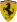

| |
Circuit |
Date |
Winner |
|
Sebring |
20 March |
#23 - T.Bernhard / J.Bergmeister / S.Maassen (Alex Job Racing - Porsche 996
GT3 RSR) |
 |
|
Mid Ohio |
27 June |
#45 - J.van Overbeek / D.Law (Flying Lizard
Motorsports - Porsche 996 GT3 RSR) |
|
|
Lime Rock Park |
5 July |
#35 - R.Kelleners / A.Lazzaro (Risi
Competizione - Ferrari 360 Modena GTC) |
 |
 |
Sears Point |
18 July |
#23 - T.Bernhard / J.Bergmeister (Alex Job Racing - Porsche 996 GT3 RSR) |
|
|
Portland |
25 July |
#24 - M.Lieb / R.Dumas (Alex Job Racing - Porsche 996 GT3 RSR) |
|
|
Mosport |
8 August |
#23 - T.Bernhard / J.Bergmeister (Alex Job Racing - Porsche 996 GT3 RSR) |
|
|
Elkhart Lake |
22 August |
#23 - T.Bernhard / J.Bergmeister (Alex Job Racing - Porsche 996 GT3 RSR) |
|
|
Road Atlanta |
25 September |
#23 - T.Bernhard / J.Bergmeister / S.Maassen (Alex Job Racing - Porsche 996
GT3 RSR) |
|
|
Laguna Seca |
16 October |
#24 - M.Lieb / R.Dumas (Alex Job Racing - Porsche 996 GT3 RSR) |
|